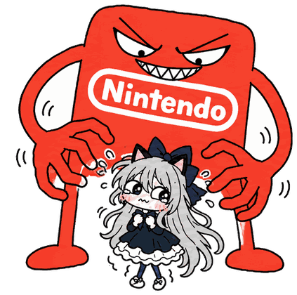

WANTED
...
This silly little website tracks Gezine's hackerone account to make sure that he hasn't been naughty and earned money from John Nintendo. If he is caught earning money from John Nintendo then it will show on this page. Gezine will get a slap on the ass if he does anything like that as he has been a bad boy. A big ass whooping for him.
Reports to John Nintendo: ?
Days since last report to John Nintendo: ?
Total hackerone reports: ?

I just want to kiss you John Nintendo you are so sexy and strong and muscular with your awesome business practices, please take all of my money
Gezine drawings based on the original from the "Two sides" post on r/switch2hacks, all credit to the original artist.
This whole website is satire. It's all a big joke, so don't take offence, everything is over-exaggerated on purpose.
🚧 This website is under construction forever 🚧
You are visitor number 000069420